SpringBootWeb案例
前面我们已经讲解了Web前端开发的基础知识，也讲解了Web后端开发的基础(HTTP协议、请求响应)，并且也讲解了数据库MySQL，以及通过Mybatis框架如何来完成数据库的基本操作。 那接下来，我们就通过一个案例，来将前端开发、后端开发、数据库整合起来。 而这个案例呢，就是我们前面提到的Tlias智能学习辅助系统。

在这个案例中，前端开发人员已经将前端工程开发完毕了。 我们需要做的，就是参考接口文档完成后端功能的开发，然后结合前端工程进行联调测试即可。
完成后的成品效果展示：

今天的主要内容如下：
- 准备工作
- 部门管理
- 员工管理
下面我们就进入到今天的第1个内容准备工作的学习。
1. 准备工作
准备工作的学习，我们先从"需求"和"环境搭建"开始入手。
1.1 需求&环境搭建
1.1.1 需求说明
1、部门管理

部门管理功能开发包括：
- 查询部门列表
- 删除部门
- 新增部门
- 修改部门
2、员工管理
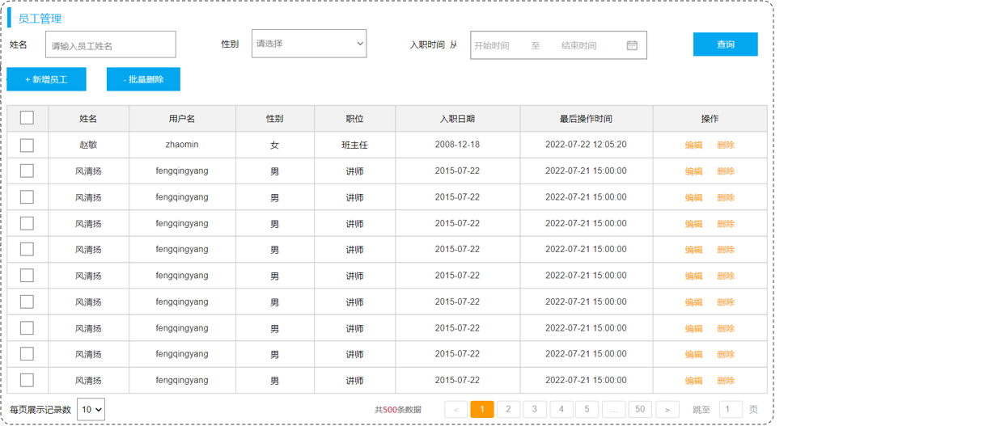
员工管理功能开发包括：
- 查询员工列表(分页、条件)
- 删除员工
- 新增员工
- 修改员工
1.1.2 环境搭建

步骤：
- 准备数据库表(dept、emp)
- 创建springboot工程，引入对应的起步依赖（web、mybatis、mysql驱动、lombok）
- 配置文件application.properties中引入mybatis的配置信息，准备对应的实体类
- 准备对应的Mapper、Service(接口、实现类)、Controller基础结构
第1步：准备数据库表
-- 部门管理
create table dept(
id int unsigned primary key auto_increment comment '主键ID',
name varchar(10) not null unique comment '部门名称',
create_time datetime not null comment '创建时间',
update_time datetime not null comment '修改时间'
) comment '部门表';
-- 部门表测试数据
insert into dept (id, name, create_time, update_time) values(1,'学工部',now(),now()),(2,'教研部',now(),now()),(3,'咨询部',now(),now()), (4,'就业部',now(),now()),(5,'人事部',now(),now());
-- 员工管理(带约束)
create table emp (
id int unsigned primary key auto_increment comment 'ID',
username varchar(20) not null unique comment '用户名',
password varchar(32) default '123456' comment '密码',
name varchar(10) not null comment '姓名',
gender tinyint unsigned not null comment '性别, 说明: 1 男, 2 女',
image varchar(300) comment '图像',
job tinyint unsigned comment '职位, 说明: 1 班主任,2 讲师, 3 学工主管, 4 教研主管, 5 咨询师',
entrydate date comment '入职时间',
dept_id int unsigned comment '部门ID',
create_time datetime not null comment '创建时间',
update_time datetime not null comment '修改时间'
) comment '员工表';
-- 员工表测试数据
INSERT INTO emp
(id, username, password, name, gender, image, job, entrydate,dept_id, create_time, update_time) VALUES
(1,'jinyong','123456','金庸',1,'1.jpg',4,'2000-01-01',2,now(),now()),
(2,'zhangwuji','123456','张无忌',1,'2.jpg',2,'2015-01-01',2,now(),now()),
(3,'yangxiao','123456','杨逍',1,'3.jpg',2,'2008-05-01',2,now(),now()),
(4,'weiyixiao','123456','韦一笑',1,'4.jpg',2,'2007-01-01',2,now(),now()),
(5,'changyuchun','123456','常遇春',1,'5.jpg',2,'2012-12-05',2,now(),now()),
(6,'xiaozhao','123456','小昭',2,'6.jpg',3,'2013-09-05',1,now(),now()),
(7,'jixiaofu','123456','纪晓芙',2,'7.jpg',1,'2005-08-01',1,now(),now()),
(8,'zhouzhiruo','123456','周芷若',2,'8.jpg',1,'2014-11-09',1,now(),now()),
(9,'dingminjun','123456','丁敏君',2,'9.jpg',1,'2011-03-11',1,now(),now()),
(10,'zhaomin','123456','赵敏',2,'10.jpg',1,'2013-09-05',1,now(),now()),
(11,'luzhangke','123456','鹿杖客',1,'11.jpg',5,'2007-02-01',3,now(),now()),
(12,'hebiweng','123456','鹤笔翁',1,'12.jpg',5,'2008-08-18',3,now(),now()),
(13,'fangdongbai','123456','方东白',1,'13.jpg',5,'2012-11-01',3,now(),now()),
(14,'zhangsanfeng','123456','张三丰',1,'14.jpg',2,'2002-08-01',2,now(),now()),
(15,'yulianzhou','123456','俞莲舟',1,'15.jpg',2,'2011-05-01',2,now(),now()),
(16,'songyuanqiao','123456','宋远桥',1,'16.jpg',2,'2007-01-01',2,now(),now()),
(17,'chenyouliang','123456','陈友谅',1,'17.jpg',NULL,'2015-03-21',NULL,now(),now());
第2步：创建一个SpringBoot工程，选择引入对应的起步依赖（web、mybatis、mysql驱动、lombok） (版本选择2.7.5版本，可以创建完毕之后，在pom.xml文件中更改版本号)
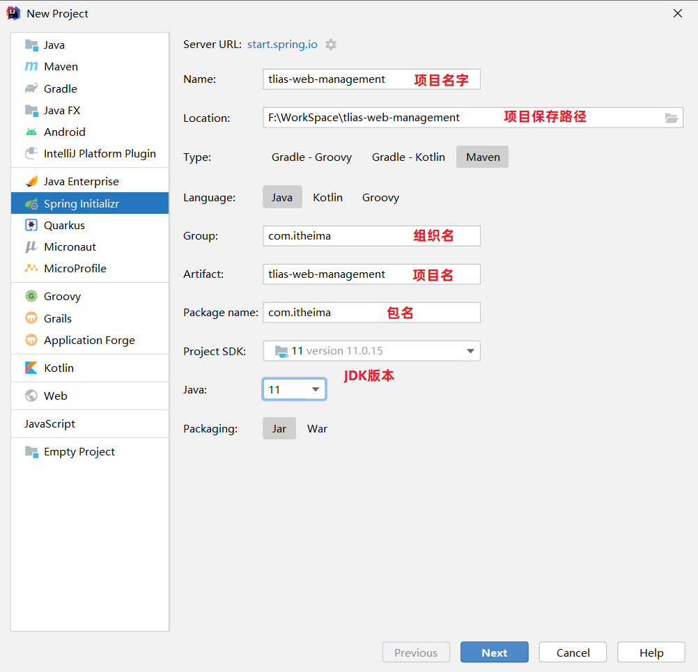

生成的pom.xml文件：
<?xml version="1.0" encoding="UTF-8"?>
<project xmlns="http://maven.apache.org/POM/4.0.0" xmlns:xsi="http://www.w3.org/2001/XMLSchema-instance"
xsi:schemaLocation="http://maven.apache.org/POM/4.0.0 https://maven.apache.org/xsd/maven-4.0.0.xsd">
<modelVersion>4.0.0</modelVersion>
<parent>
<groupId>org.springframework.boot</groupId>
<artifactId>spring-boot-starter-parent</artifactId>
<version>2.7.5</version>
<relativePath/>
</parent>
<groupId>com.itheima</groupId>
<artifactId>tlias-web-management</artifactId>
<version>0.0.1-SNAPSHOT</version>
<name>tlias-web-management</name>
<description>Demo project for Spring Boot</description>
<properties>
<java.version>11</java.version>
</properties>
<dependencies>
<dependency>
<groupId>org.springframework.boot</groupId>
<artifactId>spring-boot-starter-web</artifactId>
</dependency>
<dependency>
<groupId>org.mybatis.spring.boot</groupId>
<artifactId>mybatis-spring-boot-starter</artifactId>
<version>2.3.0</version>
</dependency>
<dependency>
<groupId>com.mysql</groupId>
<artifactId>mysql-connector-j</artifactId>
<scope>runtime</scope>
</dependency>
<dependency>
<groupId>org.projectlombok</groupId>
<artifactId>lombok</artifactId>
<optional>true</optional>
</dependency>
<dependency>
<groupId>org.springframework.boot</groupId>
<artifactId>spring-boot-starter-test</artifactId>
<scope>test</scope>
</dependency>
</dependencies>
<build>
<plugins>
<plugin>
<groupId>org.springframework.boot</groupId>
<artifactId>spring-boot-maven-plugin</artifactId>
<configuration>
<excludes>
<exclude>
<groupId>org.projectlombok</groupId>
<artifactId>lombok</artifactId>
</exclude>
</excludes>
</configuration>
</plugin>
</plugins>
</build>
</project>
创建项目工程目录结构：
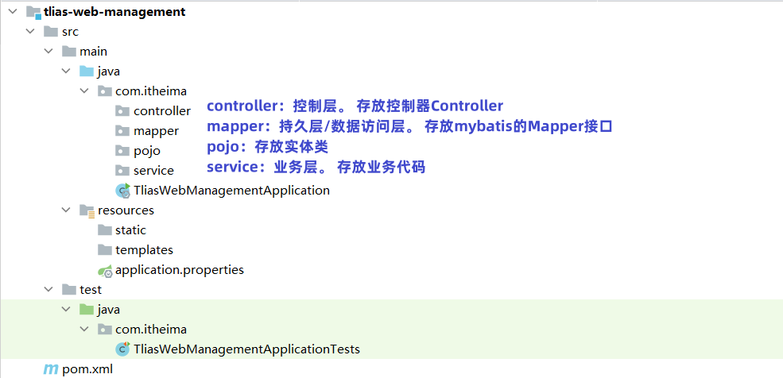
第3步：配置文件application.properties中引入mybatis的配置信息，准备对应的实体类
- application.properties （直接把之前项目中的复制过来）
#数据库连接
spring.datasource.driver-class-name=com.mysql.cj.jdbc.Driver
spring.datasource.url=jdbc:mysql://localhost:3306/tlias
spring.datasource.username=root
spring.datasource.password=1234
#开启mybatis的日志输出
mybatis.configuration.log-impl=org.apache.ibatis.logging.stdout.StdOutImpl
#开启数据库表字段 到 实体类属性的驼峰映射
mybatis.configuration.map-underscore-to-camel-case=true
- 实体类
/*部门类*/
@Data
@NoArgsConstructor
@AllArgsConstructor
public class Dept {
private Integer id;
private String name;
private LocalDateTime createTime;
private LocalDateTime updateTime;
}
/*员工类*/
@Data
@NoArgsConstructor
@AllArgsConstructor
public class Emp {
private Integer id;
private String username;
private String password;
private String name;
private Short gender;
private String image;
private Short job;
private LocalDate entrydate;
private Integer deptId;
private LocalDateTime createTime;
private LocalDateTime updateTime;
}
第4步：准备对应的Mapper、Service(接口、实现类)、Controller基础结构
数据访问层：
- DeptMapper
package com.itheima.mapper;
import org.apache.ibatis.annotations.Mapper;
@Mapper
public interface DeptMapper {
}
- EmpMapper
package com.itheima.mapper;
import org.apache.ibatis.annotations.Mapper;
@Mapper
public interface EmpMapper {
}
业务层：
- DeptService
package com.itheima.service;
//部门业务规则
public interface DeptService {
}
- DeptServiceImpl
package com.itheima.service.impl;
import lombok.extern.slf4j.Slf4j;
import org.springframework.stereotype.Service;
//部门业务实现类
@Slf4j
@Service
public class DeptServiceImpl implements DeptService {
}
- EmpService
package com.itheima.service;
//员工业务规则
public interface EmpService {
}
- EmpServiceImpl
package com.itheima.service.impl;
import com.itheima.service.EmpService;
import lombok.extern.slf4j.Slf4j;
import org.springframework.stereotype.Service;
//员工业务实现类
@Slf4j
@Service
public class EmpServiceImpl implements EmpService {
}
控制层：
- DeptController
package com.itheima.controller;
import org.springframework.web.bind.annotation.RestController;
//部门管理控制器
@RestController
public class DeptController {
}
- EmpController
package com.itheima.controller;
import org.springframework.web.bind.annotation.RestController;
//员工管理控制器
@RestController
public class EmpController {
}
项目工程结构：

1.2 开发规范
了解完需求也完成了环境搭建了，我们下面开始学习开发的一些规范。
开发规范我们主要从以下几方面介绍：
1、开发规范-REST
我们的案例是基于当前最为主流的前后端分离模式进行开发。
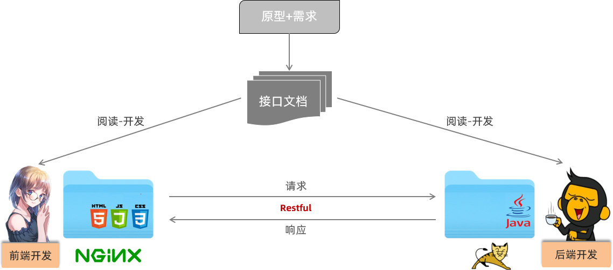
在前后端分离的开发模式中，前后端开发人员都需要根据提前定义好的接口文档，来进行前后端功能的开发。
后端开发人员：必须严格遵守提供的接口文档进行后端功能开发（保障开发的功能可以和前端对接）

而在前后端进行交互的时候，我们需要基于当前主流的REST风格的API接口进行交互。
什么是REST风格呢?
- REST（Representational State Transfer），表述性状态转换，它是一种软件架构风格。
传统URL风格如下：
http:/user/getById?id=1 GET：查询id为1的用户
http:/user/saveUser POST：新增用户
http:/user/updateUser POST：修改用户
http:/user/deleteUser?id=1 GET：删除id为1的用户
我们看到，原始的传统URL呢，定义比较复杂，而且将资源的访问行为对外暴露出来了。
基于REST风格URL如下：
http://localhost:8080/users/1 GET：查询id为1的用户
http://localhost:8080/users POST：新增用户
http://localhost:8080/users PUT：修改用户
http://localhost:8080/users/1 DELETE：删除id为1的用户
其中总结起来，就一句话：通过URL定位要操作的资源，通过HTTP动词(请求方式)来描述具体的操作。
在REST风格的URL中，通过四种请求方式，来操作数据的增删改查。
- GET ： 查询
- POST ：新增
- PUT ：修改
- DELETE ：删除
我们看到如果是基于REST风格，定义URL，URL将会更加简洁、更加规范、更加优雅。
注意事项：
- REST是风格，是约定方式，约定不是规定，可以打破
- 描述模块的功能通常使用复数，也就是加s的格式来描述，表示此类资源，而非单个资源。如：users、emps、books…
2、开发规范-统一响应结果
前后端工程在进行交互时，使用统一响应结果 Result。
package com.itheima.pojo;
import lombok.AllArgsConstructor;
import lombok.Data;
import lombok.NoArgsConstructor;
@Data
@NoArgsConstructor
@AllArgsConstructor
public class Result {
private Integer code;//响应码，1 代表成功; 0 代表失败
private String msg; //响应信息 描述字符串
private Object data; //返回的数据
//增删改 成功响应
public static Result success(){
return new Result(1,"success",null);
}
//查询 成功响应
public static Result success(Object data){
return new Result(1,"success",data);
}
//失败响应
public static Result error(String msg){
return new Result(0,msg,null);
}
}
3、开发流程
我们在进行功能开发时，都是根据如下流程进行：
-
查看页面原型明确需求
- 根据页面原型和需求，进行表结构设计、编写接口文档(已提供)
-
阅读接口文档
-
思路分析
-
功能接口开发
- 就是开发后台的业务功能，一个业务功能，我们称为一个接口
-
功能接口测试
- 功能开发完毕后，先通过Postman进行功能接口测试，测试通过后，再和前端进行联调测试
-
前后端联调测试
- 和前端开发人员开发好的前端工程一起测试
2. 部门管理
我们按照前面学习的开发流程，开始完成功能开发。首先按照之前分析的需求，完成部门管理的功能开发。
开发的部门管理功能包含：
- 查询部门
- 删除部门
- 新增部门
- 更新部门（不讲解，自己独立完成）
2.1 查询部门
2.1.1 原型和需求
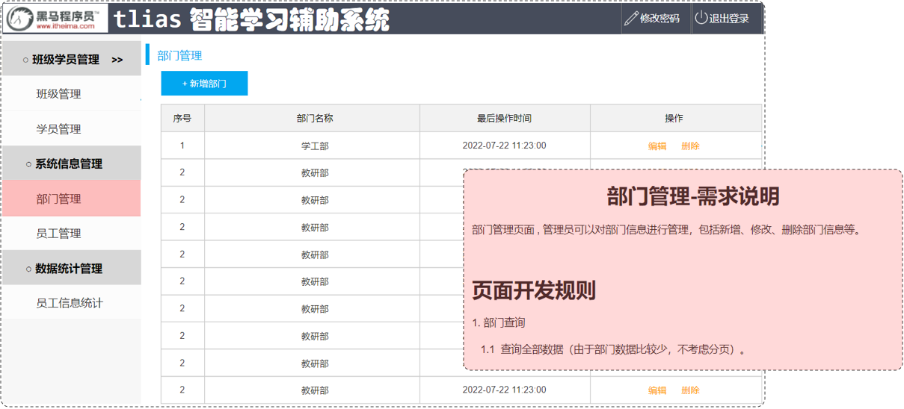
查询的部门的信息：部门ID、部门名称、修改时间
通过页面原型以及需求描述，我们可以看到，部门查询，是不需要考虑分页操作的。
2.1.2 接口文档
部门列表查询
-
基本信息
请求路径：/depts 请求方式：GET 接口描述：该接口用于部门列表数据查询 -
请求参数
无
-
响应数据
参数格式：application/json
参数说明：
参数名 类型 是否必须 备注 code number 必须 响应码，1 代表成功，0 代表失败 msg string 非必须 提示信息 data object[ ] 非必须 返回的数据 |- id number 非必须 id |- name string 非必须 部门名称 |- createTime string 非必须 创建时间 |- updateTime string 非必须 修改时间 响应数据样例：
{ "code": 1, "msg": "success", "data": [ { "id": 1, "name": "学工部", "createTime": "2022-09-01T23:06:29", "updateTime": "2022-09-01T23:06:29" }, { "id": 2, "name": "教研部", "createTime": "2022-09-01T23:06:29", "updateTime": "2022-09-01T23:06:29" } ] }
2.1.3 思路分析

2.1.4 功能开发
通过查看接口文档：部门列表查询
请求路径：/depts
请求方式：GET
请求参数：无
响应数据：json格式
DeptController
@Slf4j
@RestController
public class DeptController {
@Autowired
private DeptService deptService;
//@RequestMapping(value = "/depts" , method = RequestMethod.GET)
@GetMapping("/depts")
public Result list(){
log.info("查询所有部门数据");
List<Dept> deptList = deptService.list();
return Result.success(deptList);
}
}
@Slf4j注解源码：

DeptService（业务接口）
public interface DeptService {
/**
* 查询所有的部门数据
* @return 存储Dept对象的集合
*/
List<Dept> list();
}
DeptServiceImpl（业务实现类）
@Slf4j
@Service
public class DeptServiceImpl implements DeptService {
@Autowired
private DeptMapper deptMapper;
@Override
public List<Dept> list() {
List<Dept> deptList = deptMapper.list();
return deptList;
}
}
DeptMapper
@Mapper
public interface DeptMapper {
//查询所有部门数据
@Select("select id, name, create_time, update_time from dept")
List<Dept> list();
}
2.1.5 功能测试
功能开发完成后，我们就可以启动项目，然后打开postman，发起GET请求，访问 ：http://localhost:8080/depts

2.2 前后端联调
完成了查询部门的功能，我们也通过postman工具测试通过了，下面我们再基于前后端分离的方式进行接口联调。具体操作如下：
1、将资料中提供的"前端环境"文件夹中的压缩包，拷贝到一个没有中文不带空格的目录下

2、拷贝到一个没有中文不带空格的目录后，进行解压（解压到当前目录）
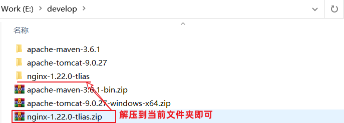
3、启动nginx
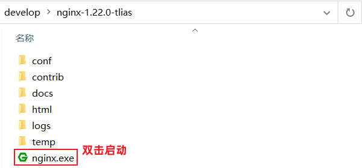
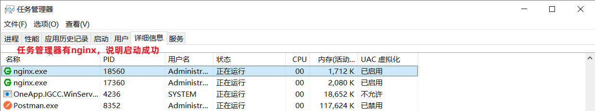
4、打开浏览器，访问：http://localhost:90

5、测试：部门管理 - 查询部门列表
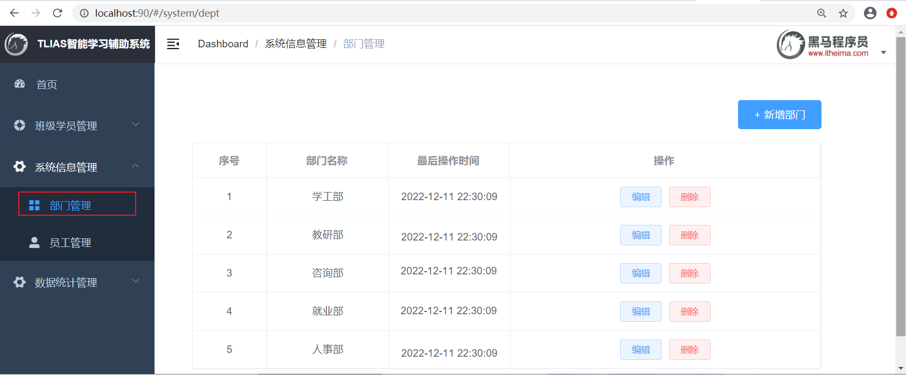
说明：只要按照接口文档开发功能接口，就能保证前后端程序交互
- 后端：严格遵守接口文档进行功能接口开发
- 前端：严格遵守接口文档访问功能接口
2.3 删除部门
查询部门的功能我们搞定了，下面我们开始完成删除部门的功能开发。
2.3.1 需求
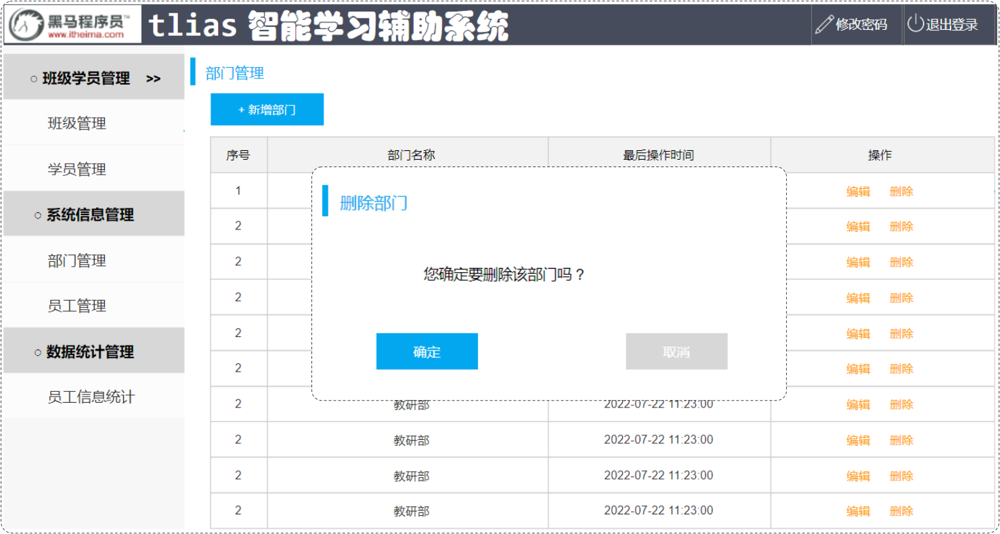
点击部门列表后面操作栏的 "删除" 按钮，就可以删除该部门信息。 此时，前端只需要给服务端传递一个ID参数就可以了。 我们从接口文档中也可以看得出来。
2.3.2 接口文档
删除部门
-
基本信息
请求路径：/depts/{id} 请求方式：DELETE 接口描述：该接口用于根据ID删除部门数据 -
请求参数
参数格式：路径参数参数说明：
参数名 类型 是否必须 备注 id number 必须 部门ID 请求参数样例：
/depts/1 -
响应数据
参数格式：application/json参数说明：
参数名 类型 是否必须 备注 code number 必须 响应码，1 代表成功，0 代表失败 msg string 非必须 提示信息 data object 非必须 返回的数据 响应数据样例：
{ "code":1, "msg":"success", "data":null }
2.3.3 思路分析
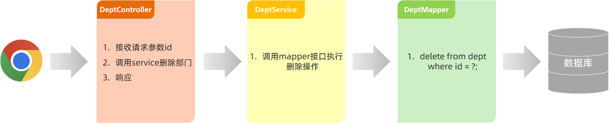
接口文档规定：
- 前端请求路径：/depts/{id}
- 前端请求方式：DELETE
问题1：怎么在controller中接收请求路径中的路径参数？
@PathVariable问题2：如何限定请求方式是delete？
@DeleteMapping
2.3.4 功能开发
通过查看接口文档：删除部门
请求路径：/depts/{id}
请求方式：DELETE
请求参数：路径参数 {id}
响应数据：json格式
DeptController
@Slf4j
@RestController
public class DeptController {
@Autowired
private DeptService deptService;
@DeleteMapping("/depts/{id}")
public Result delete(@PathVariable Integer id) {
//日志记录
log.info("根据id删除部门");
//调用service层功能
deptService.delete(id);
//响应
return Result.success();
}
//省略...
}
DeptService
public interface DeptService {
/**
* 根据id删除部门
* @param id 部门id
*/
void delete(Integer id);
//省略...
}
DeptServiceImpl
@Slf4j
@Service
public class DeptServiceImpl implements DeptService {
@Autowired
private DeptMapper deptMapper;
@Override
public void delete(Integer id) {
//调用持久层删除功能
deptMapper.deleteById(id);
}
//省略...
}
DeptMapper
@Mapper
public interface DeptMapper {
/**
* 根据id删除部门信息
* @param id 部门id
*/
@Delete("delete from dept where id = #{id}")
void deleteById(Integer id);
//省略...
}
2.3.5 功能测试
删除功能开发完成后，重新启动项目，使用postman，发起DELETE请求：

2.3.6 前后端联调
打开浏览器，测试后端功能接口：
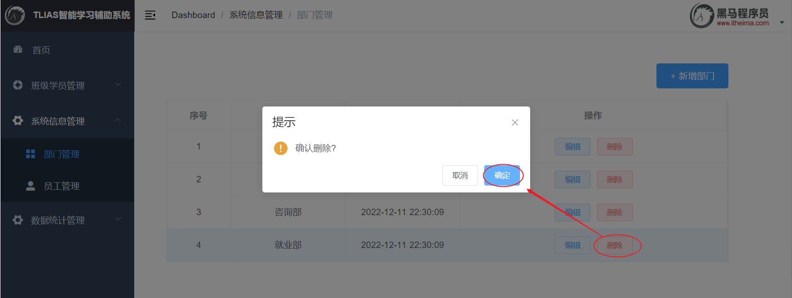
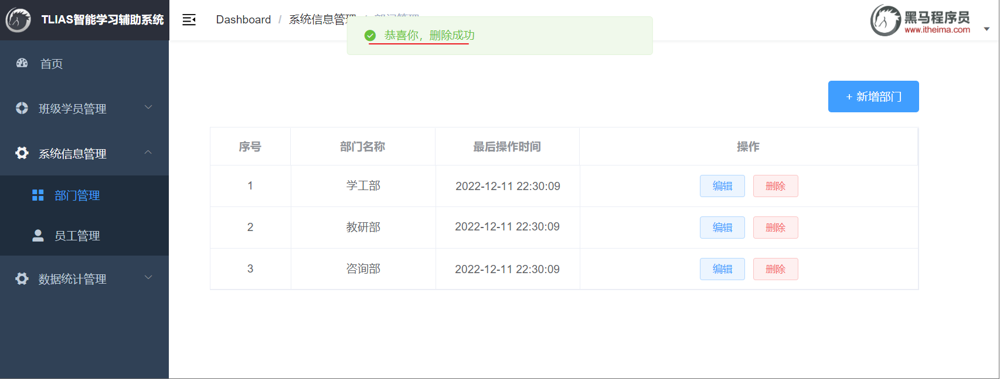
2.4 新增部门
我们前面已完成了查询部门、删除部门两个功能，也熟悉了开发的流程。下面我们继续完成新增部门功能。
2.4.1 需求

点击 "新增部门" 按钮，弹出新增部门对话框，输入部门名称，点击 "保存" ，将部门信息保存到数据库。
2.4.2 接口文档
添加部门
-
基本信息
请求路径：/depts 请求方式：POST 接口描述：该接口用于添加部门数据 -
请求参数
格式：application/json
参数说明：
参数名 类型 是否必须 备注 name string 必须 部门名称 请求参数样例：
{ "name": "教研部" } -
响应数据
参数格式：application/json
参数说明：
参数名 类型 是否必须 备注 code number 必须 响应码，1 代表成功，0 代表失败 msg string 非必须 提示信息 data object 非必须 返回的数据 响应数据样例：
{ "code":1, "msg":"success", "data":null }
2.4.3 思路分析
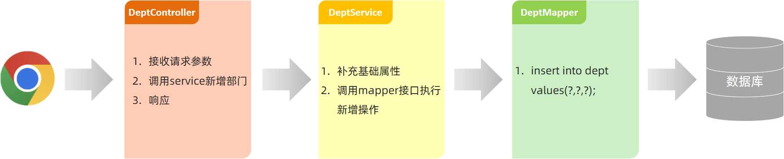
接口文档规定：
- 前端请求路径：/depts
- 前端请求方式：POST
- 前端请求参数 (Json格式)：{ "name": "教研部" }
问题1：如何限定请求方式是POST？
@PostMapping问题2：怎么在controller中接收json格式的请求参数？
@RequestBody //把前端传递的json数据填充到实体类中
2.4.4 功能开发
通过查看接口文档：新增部门
请求路径：/depts
请求方式：POST
请求参数：json格式
响应数据：json格式
DeptController
@Slf4j
@RestController
public class DeptController {
@Autowired
private DeptService deptService;
@PostMapping("/depts")
public Result add(@RequestBody Dept dept){
//记录日志
log.info("新增部门：{}",dept);
//调用service层添加功能
deptService.add(dept);
//响应
return Result.success();
}
//省略...
}
DeptService
public interface DeptService {
/**
* 新增部门
* @param dept 部门对象
*/
void add(Dept dept);
//省略...
}
DeptServiceImpl
@Slf4j
@Service
public class DeptServiceImpl implements DeptService {
@Autowired
private DeptMapper deptMapper;
@Override
public void add(Dept dept) {
//补全部门数据
dept.setCreateTime(LocalDateTime.now());
dept.setUpdateTime(LocalDateTime.now());
//调用持久层增加功能
deptMapper.inser(dept);
}
//省略...
}
DeptMapper
@Mapper
public interface DeptMapper {
@Insert("insert into dept (name, create_time, update_time) values (#{name},#{createTime},#{updateTime})")
void inser(Dept dept);
//省略...
}
2.4.5 功能测试
新增功能开发完成后，重新启动项目，使用postman，发起POST请求：
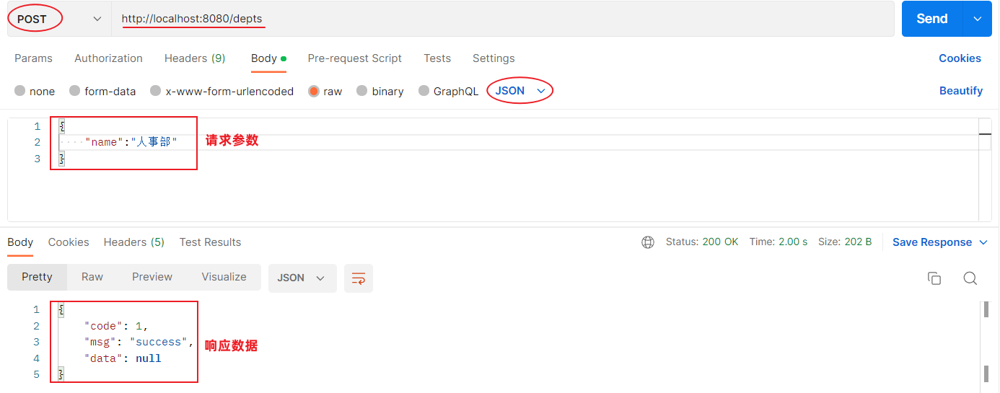
2.4.6 前后端联调
打开浏览器，测试后端功能接口：


2.4.7 请求路径
我们部门管理的查询、删除、新增功能全部完成了，接下来我们要对controller层的代码进行优化。
首先我们先来看下目前controller层代码：
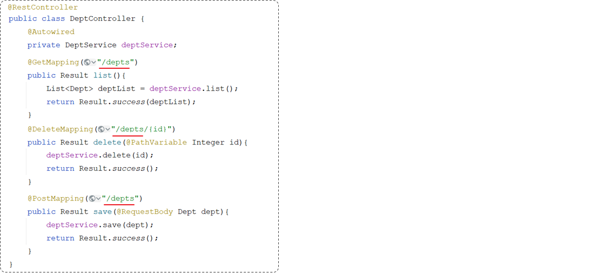
以上三个方法上的请求路径，存在一个共同点：都是以
/depts作为开头。（重复了）
在Spring当中为了简化请求路径的定义，可以把公共的请求路径，直接抽取到类上，在类上加一个注解@RequestMapping，并指定请求路径"/depts"。代码参照如下：

优化前后的对比：

注意事项：一个完整的请求路径，应该是类上@RequestMapping的value属性 + 方法上的 @RequestMapping的value属性
3. 员工管理
完成了部门管理的功能开发之后，我们进入到下一环节员工管理功能的开发。
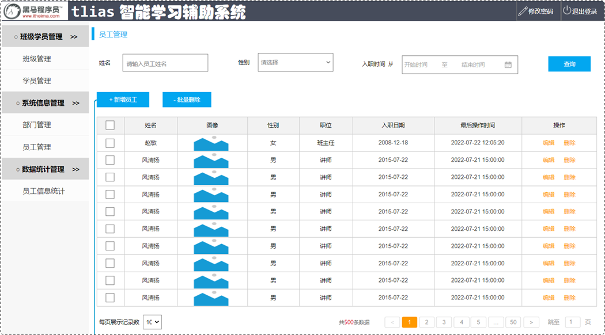
基于以上原型，我们可以把员工管理功能分为：
- 分页查询（今天完成）
- 带条件的分页查询（今天完成）
- 删除员工（今天完成）
- 新增员工（后续完成）
- 修改员工（后续完成）
那下面我们就先从分页查询功能开始学习。
3.1 分页查询
3.1.1 基础分页
3.1.1.1 需求分析
我们之前做的查询功能，是将数据库中所有的数据查询出来并展示到页面上，试想如果数据库中的数据有很多(假设有十几万条)的时候，将数据全部展示出来肯定不现实，那如何解决这个问题呢？
使用分页解决这个问题。每次只展示一页的数据，比如：一页展示10条数据，如果还想看其他的数据，可以通过点击页码进行查询。

要想从数据库中进行分页查询，我们要使用LIMIT关键字，格式为：limit 开始索引 每页显示的条数
查询第1页数据的SQL语句是：
select * from emp limit 0,10;查询第2页数据的SQL语句是：
select * from emp limit 10,10;查询第3页的数据的SQL语句是：
select * from emp limit 20,10;观察以上SQL语句，发现： 开始索引一直在改变 ， 每页显示条数是固定的
开始索引的计算公式： 开始索引 = (当前页码 - 1) * 每页显示条数
我们继续基于页面原型，继续分析，得出以下结论：
- 前端在请求服务端时，传递的参数
- 当前页码 page
- 每页显示条数 pageSize
- 后端需要响应什么数据给前端
- 所查询到的数据列表（存储到List 集合中）
- 总记录数
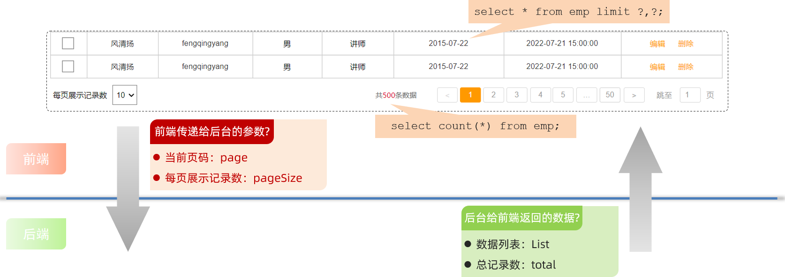
后台给前端返回的数据包含：List集合(数据列表)、total(总记录数)
而这两部分我们通常封装到PageBean对象中，并将该对象转换为json格式的数据响应回给浏览器。
@Data @NoArgsConstructor @AllArgsConstructor public class PageBean { private Long total; //总记录数 private List rows; //当前页数据列表 }
3.1.1.2 接口文档
员工列表查询
-
基本信息
请求路径：/emps 请求方式：GET 接口描述：该接口用于员工列表数据的条件分页查询 -
请求参数
参数格式：queryString
参数说明：
参数名称 是否必须 示例 备注 name 否 张 姓名 gender 否 1 性别 , 1 男 , 2 女 begin 否 2010-01-01 范围匹配的开始时间(入职日期) end 否 2020-01-01 范围匹配的结束时间(入职日期) page 是 1 分页查询的页码，如果未指定，默认为1 pageSize 是 10 分页查询的每页记录数，如果未指定，默认为10 请求数据样例：
/emps?name=张&gender=1&begin=2007-09-01&end=2022-09-01&page=1&pageSize=10 -
响应数据
参数格式：application/json
参数说明：
名称 类型 是否必须 默认值 备注 其他信息 code number 必须 响应码, 1 成功 , 0 失败 msg string 非必须 提示信息 data object 必须 返回的数据 |- total number 必须 总记录数 |- rows object [] 必须 数据列表 item 类型: object |- id number 非必须 id |- username string 非必须 用户名 |- name string 非必须 姓名 |- password string 非必须 密码 |- entrydate string 非必须 入职日期 |- gender number 非必须 性别 , 1 男 ; 2 女 |- image string 非必须 图像 |- job number 非必须 职位, 说明: 1 班主任,2 讲师, 3 学工主管, 4 教研主管, 5 咨询师 |- deptId number 非必须 部门id |- createTime string 非必须 创建时间 |- updateTime string 非必须 更新时间 响应数据样例：
{ "code": 1, "msg": "success", "data": { "total": 2, "rows": [ { "id": 1, "username": "jinyong", "password": "123456", "name": "金庸", "gender": 1, "image": "https://web-framework.oss-cn-hangzhou.aliyuncs.com/2022-09-02-00-27-53B.jpg", "job": 2, "entrydate": "2015-01-01", "deptId": 2, "createTime": "2022-09-01T23:06:30", "updateTime": "2022-09-02T00:29:04" }, { "id": 2, "username": "zhangwuji", "password": "123456", "name": "张无忌", "gender": 1, "image": "https://web-framework.oss-cn-hangzhou.aliyuncs.com/2022-09-02-00-27-53B.jpg", "job": 2, "entrydate": "2015-01-01", "deptId": 2, "createTime": "2022-09-01T23:06:30", "updateTime": "2022-09-02T00:29:04" } ] } }
3.1.1.3 思路分析
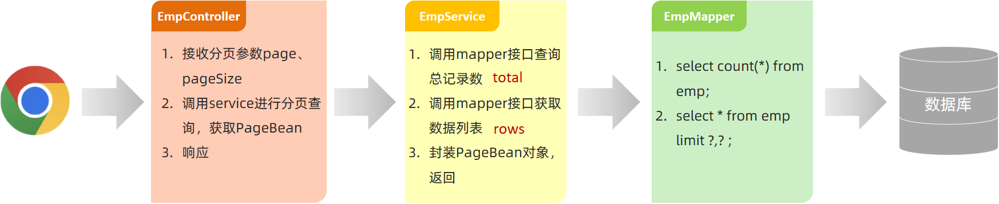
分页查询需要的数据，封装在PageBean对象中：

3.1.1.4 功能开发
通过查看接口文档：员工列表查询
请求路径：/emps
请求方式：GET
请求参数：跟随在请求路径后的参数字符串。 例：/emps?page=1&pageSize=10
响应数据：json格式
EmpController
import com.itheima.pojo.PageBean;
import com.itheima.pojo.Result;
import com.itheima.service.EmpService;
import lombok.extern.slf4j.Slf4j;
import org.springframework.beans.factory.annotation.Autowired;
import org.springframework.web.bind.annotation.GetMapping;
import org.springframework.web.bind.annotation.RequestMapping;
import org.springframework.web.bind.annotation.RequestParam;
import org.springframework.web.bind.annotation.RestController;
@Slf4j
@RestController
@RequestMapping("/emps")
public class EmpController {
@Autowired
private EmpService empService;
//条件分页查询
@GetMapping
public Result page(@RequestParam(defaultValue = "1") Integer page,
@RequestParam(defaultValue = "10") Integer pageSize) {
//记录日志
log.info("分页查询，参数：{},{}", page, pageSize);
//调用业务层分页查询功能
PageBean pageBean = empService.page(page, pageSize);
//响应
return Result.success(pageBean);
}
}
@RequestParam(defaultValue="默认值") //设置请求参数默认值
EmpService
public interface EmpService {
/**
* 条件分页查询
* @param page 页码
* @param pageSize 每页展示记录数
* @return
*/
PageBean page(Integer page, Integer pageSize);
}
EmpServiceImpl
import com.itheima.mapper.EmpMapper;
import com.itheima.pojo.Emp;
import com.itheima.pojo.PageBean;
import com.itheima.service.EmpService;
import lombok.extern.slf4j.Slf4j;
import org.springframework.beans.factory.annotation.Autowired;
import org.springframework.stereotype.Service;
import java.time.LocalDate;
import java.util.List;
@Slf4j
@Service
public class EmpServiceImpl implements EmpService {
@Autowired
private EmpMapper empMapper;
@Override
public PageBean page(Integer page, Integer pageSize) {
//1、获取总记录数
Long count = empMapper.count();
//2、获取分页查询结果列表
Integer start = (page - 1) * pageSize; //计算起始索引 , 公式: (页码-1)*页大小
List<Emp> empList = empMapper.list(start, pageSize);
//3、封装PageBean对象
PageBean pageBean = new PageBean(count , empList);
return pageBean;
}
}
EmpMapper
@Mapper
public interface EmpMapper {
//获取总记录数
@Select("select count(*) from emp")
public Long count();
//获取当前页的结果列表
@Select("select * from emp limit #{start}, #{pageSize}")
public List<Emp> list(Integer start, Integer pageSize);
}
3.1.1.5 功能测试
功能开发完成后，重新启动项目，使用postman，发起POST请求：
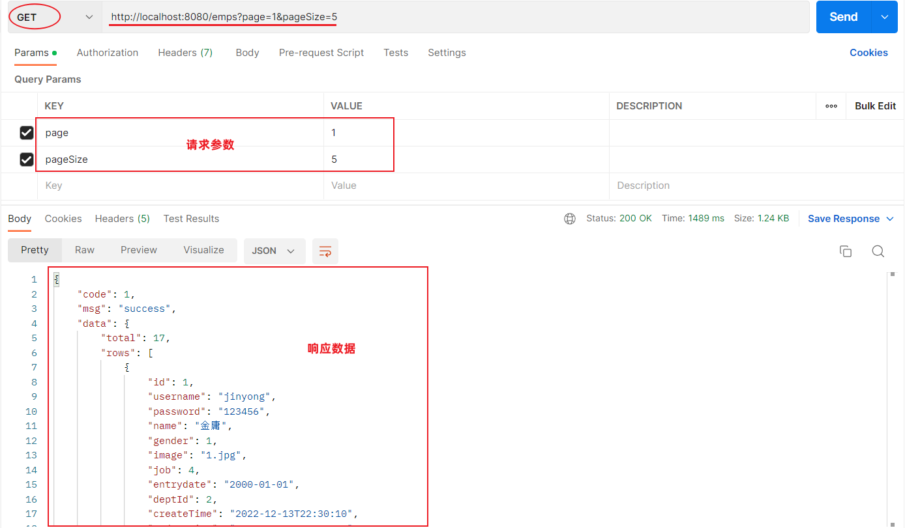
3.1.1.6 前后端联调
打开浏览器，测试后端功能接口：

3.1.2 分页插件
3.1.2.1 介绍
前面我们已经完了基础的分页查询，大家会发现：分页查询功能编写起来比较繁琐。
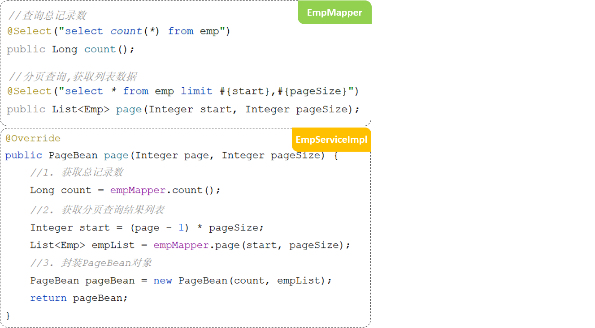
在Mapper接口中定义两个方法执行两条不同的SQL语句：
- 查询总记录数
- 指定页码的数据列表
在Service当中，调用Mapper接口的两个方法，分别获取：总记录数、查询结果列表，然后在将获取的数据结果封装到PageBean对象中。
大家思考下：在未来开发其他项目，只要涉及到分页查询功能(例：订单、用户、支付、商品)，都必须按照以上操作完成功能开发
结论：原始方式的分页查询，存在着"步骤固定"、"代码频繁"的问题
解决方案：可以使用一些现成的分页插件完成。对于Mybatis来讲现在最主流的就是PageHelper。
PageHelper是Mybatis的一款功能强大、方便易用的分页插件，支持任何形式的单标、多表的分页查询。

在执行empMapper.list()方法时，就是执行：select * from emp 语句，怎么能够实现分页操作呢？
分页插件帮我们完成了以下操作：
- 先获取到要执行的SQL语句：select * from emp
- 把SQL语句中的字段列表，变为：count(*)
- 执行SQL语句：select count(*) from emp //获取到总记录数
- 再对要执行的SQL语句：select * from emp 进行改造，在末尾添加 limit ? , ?
- 执行改造后的SQL语句：select * from emp limit ? , ?
3.1.2.2 代码实现
当使用了PageHelper分页插件进行分页，就无需再Mapper中进行手动分页了。 在Mapper中我们只需要进行正常的列表查询即可。在Service层中，调用Mapper的方法之前设置分页参数，在调用Mapper方法执行查询之后，解析分页结果，并将结果封装到PageBean对象中返回。
1、在pom.xml引入依赖
<dependency>
<groupId>com.github.pagehelper</groupId>
<artifactId>pagehelper-spring-boot-starter</artifactId>
<version>1.4.2</version>
</dependency>
2、EmpMapper
@Mapper
public interface EmpMapper {
//获取当前页的结果列表
@Select("select * from emp")
public List<Emp> page(Integer start, Integer pageSize);
}
3、EmpServiceImpl
@Override
public PageBean page(Integer page, Integer pageSize) {
// 设置分页参数
PageHelper.startPage(page, pageSize);
// 执行分页查询
List<Emp> empList = empMapper.list(name,gender,begin,end);
// 获取分页结果
Page<Emp> p = (Page<Emp>) empList;
//封装PageBean
PageBean pageBean = new PageBean(p.getTotal(), p.getResult());
return pageBean;
}
3.1.2.3 测试
功能开发完成后，我们重启项目工程，打开postman，发起GET请求，访问 ：http://localhost:8080/emps?page=1&pageSize=5
后端程序SQL输出：

3.2 分页查询(带条件)
完了分页查询后，下面我们需要在分页查询的基础上，添加条件。
3.2.1 需求

通过员工管理的页面原型我们可以看到，员工列表页面的查询，不仅仅需要考虑分页，还需要考虑查询条件。 分页查询我们已经实现了，接下来，我们需要考虑在分页查询的基础上，再加上查询条件。
我们看到页面原型及需求中描述，搜索栏的搜索条件有三个，分别是：
- 姓名：模糊匹配
- 性别：精确匹配
- 入职日期：范围匹配
select *
from emp
where
name like concat('%','张','%') -- 条件1：根据姓名模糊匹配
and gender = 1 -- 条件2：根据性别精确匹配
and entrydate = between '2000-01-01' and '2010-01-01' -- 条件3：根据入职日期范围匹配
order by update_time desc;
而且上述的三个条件，都是可以传递，也可以不传递的，也就是动态的。 我们需要使用前面学习的Mybatis中的动态SQL 。
3.2.2 思路分析
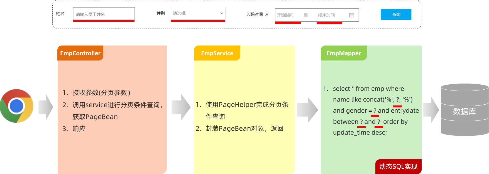
3.2.3 功能开发
通过查看接口文档：员工列表查询
请求路径：/emps
请求方式：GET
请求参数：
参数名称 是否必须 示例 备注 name 否 张 姓名 gender 否 1 性别 , 1 男 , 2 女 begin 否 2010-01-01 范围匹配的开始时间(入职日期) end 否 2020-01-01 范围匹配的结束时间(入职日期) page 是 1 分页查询的页码，如果未指定，默认为1 pageSize 是 10 分页查询的每页记录数，如果未指定，默认为10
在原有分页查询的代码基础上进行改造：
EmpController
@Slf4j
@RestController
@RequestMapping("/emps")
public class EmpController {
@Autowired
private EmpService empService;
//条件分页查询
@GetMapping
public Result page(@RequestParam(defaultValue = "1") Integer page,
@RequestParam(defaultValue = "10") Integer pageSize,
String name, Short gender,
@DateTimeFormat(pattern = "yyyy-MM-dd") LocalDate begin,
@DateTimeFormat(pattern = "yyyy-MM-dd") LocalDate end) {
//记录日志
log.info("分页查询，参数：{},{},{},{},{},{}", page, pageSize,name, gender, begin, end);
//调用业务层分页查询功能
PageBean pageBean = empService.page(page, pageSize, name, gender, begin, end);
//响应
return Result.success(pageBean);
}
}
EmpService
public interface EmpService {
/**
* 条件分页查询
* @param page 页码
* @param pageSize 每页展示记录数
* @param name 姓名
* @param gender 性别
* @param begin 开始时间
* @param end 结束时间
* @return
*/
PageBean page(Integer page, Integer pageSize, String name, Short gender, LocalDate begin, LocalDate end);
}
EmpServiceImpl
@Slf4j
@Service
public class EmpServiceImpl implements EmpService {
@Autowired
private EmpMapper empMapper;
@Override
public PageBean page(Integer page, Integer pageSize, String name, Short gender, LocalDate begin, LocalDate end) {
//设置分页参数
PageHelper.startPage(page, pageSize);
//执行条件分页查询
List<Emp> empList = empMapper.list(name, gender, begin, end);
//获取查询结果
Page<Emp> p = (Page<Emp>) empList;
//封装PageBean
PageBean pageBean = new PageBean(p.getTotal(), p.getResult());
return pageBean;
}
}
EmpMapper
@Mapper
public interface EmpMapper {
//获取当前页的结果列表
public List<Emp> list(String name, Short gender, LocalDate begin, LocalDate end);
}
EmpMapper.xml
<?xml version="1.0" encoding="UTF-8" ?>
<!DOCTYPE mapper
PUBLIC "-//mybatis.org//DTD Mapper 3.0//EN"
"http://mybatis.org/dtd/mybatis-3-mapper.dtd">
<mapper namespace="com.itheima.mapper.EmpMapper">
<!-- 条件分页查询 -->
<select id="list" resultType="com.itheima.pojo.Emp">
select * from emp
<where>
<if test="name != null and name != ''">
name like concat('%',#{name},'%')
</if>
<if test="gender != null">
and gender = #{gender}
</if>
<if test="begin != null and end != null">
and entrydate between #{begin} and #{end}
</if>
</where>
order by update_time desc
</select>
</mapper>
3.2.4 功能测试
功能开发完成后，重启项目工程，打开postman，发起GET请求：

控制台SQL语句：

3.2.5 前后端联调
打开浏览器，测试后端功能接口：

3.3 删除员工
查询员完成之后，我们继续开发新的功能：删除员工。
3.3.1 需求

当我们勾选列表前面的复选框，然后点击 "批量删除" 按钮，就可以将这一批次的员工信息删除掉了。也可以只勾选一个复选框，仅删除一个员工信息。
问题：我们需要开发两个功能接口吗？一个删除单个员工，一个删除多个员工
答案：不需要。 只需要开发一个功能接口即可（删除多个员工包含只删除一个员工）
3.3.2 接口文档
删除员工
-
基本信息
请求路径：/emps/{ids} 请求方式：DELETE 接口描述：该接口用于批量删除员工的数据信息 -
请求参数
参数格式：路径参数
参数说明：
参数名 类型 示例 是否必须 备注 ids 数组 array 1,2,3 必须 员工的id数组 请求参数样例：
/emps/1,2,3 -
响应数据
参数格式：application/json
参数说明：
参数名 类型 是否必须 备注 code number 必须 响应码，1 代表成功，0 代表失败 msg string 非必须 提示信息 data object 非必须 返回的数据 响应数据样例：
{ "code":1, "msg":"success", "data":null }
3.3.3 思路分析
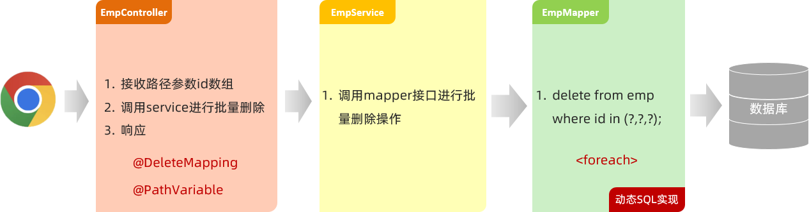
接口文档规定：
- 前端请求路径：/emps/{ids}
- 前端请求方式：DELETE
问题1：怎么在controller中接收请求路径中的路径参数？
@PathVariable问题2：如何限定请求方式是delete？
@DeleteMapping问题3：在Mapper接口中，执行delete操作的SQL语句时，条件中的id值是不确定的是动态的，怎么实现呢？
Mybatis中的动态SQL：foreach
3.3.4 功能开发
通过查看接口文档：删除员工
请求路径：/emps/{ids}
请求方式：DELETE
请求参数：路径参数 {ids}
响应数据：json格式
EmpController
@Slf4j
@RestController
@RequestMapping("/emps")
public class EmpController {
@Autowired
private EmpService empService;
//批量删除
@DeleteMapping("/{ids}")
public Result delete(@PathVariable List<Integer> ids){
empService.delete(ids);
return Result.success();
}
//条件分页查询
@GetMapping
public Result page(@RequestParam(defaultValue = "1") Integer page,
@RequestParam(defaultValue = "10") Integer pageSize,
String name, Short gender,
@DateTimeFormat(pattern = "yyyy-MM-dd") LocalDate begin,
@DateTimeFormat(pattern = "yyyy-MM-dd") LocalDate end) {
//记录日志
log.info("分页查询，参数：{},{},{},{},{},{}", page, pageSize,name, gender, begin, end);
//调用业务层分页查询功能
PageBean pageBean = empService.page(page, pageSize, name, gender, begin, end);
//响应
return Result.success(pageBean);
}
}
EmpService
public interface EmpService {
/**
* 批量删除操作
* @param ids id集合
*/
void delete(List<Integer> ids);
//省略...
}
EmpServiceImpl
@Slf4j
@Service
public class EmpServiceImpl implements EmpService {
@Autowired
private EmpMapper empMapper;
@Override
public void delete(List<Integer> ids) {
empMapper.delete(ids);
}
//省略...
}
EmpMapper
@Mapper
public interface EmpMapper {
//批量删除
void delete(List<Integer> ids);
//省略...
}
EmpMapper.xml
<?xml version="1.0" encoding="UTF-8" ?>
<!DOCTYPE mapper
PUBLIC "-//mybatis.org//DTD Mapper 3.0//EN"
"http://mybatis.org/dtd/mybatis-3-mapper.dtd">
<mapper namespace="com.itheima.mapper.EmpMapper">
<!--批量删除员工-->
<select id="delete">
delete from emp where id in
<foreach collection="ids" item="id" open="(" close=")" separator=",">
#{id}
</foreach>
</select>
<!-- 省略... -->
</mapper>
3.3.5 功能测试
功能开发完成后，重启项目工程，打开postman，发起DELETE请求：
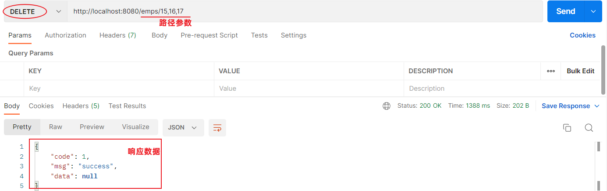
控制台SQL语句：
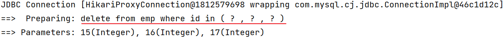
3.3.6 前后端联调
打开浏览器，测试后端功能接口：

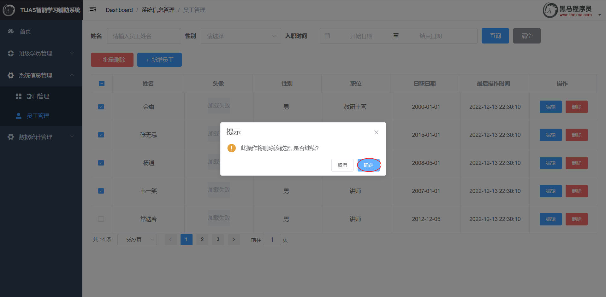
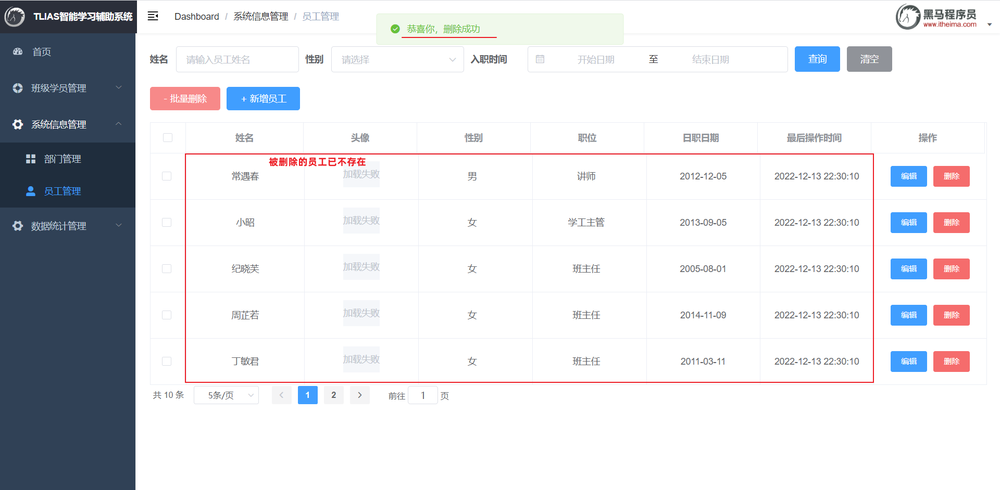